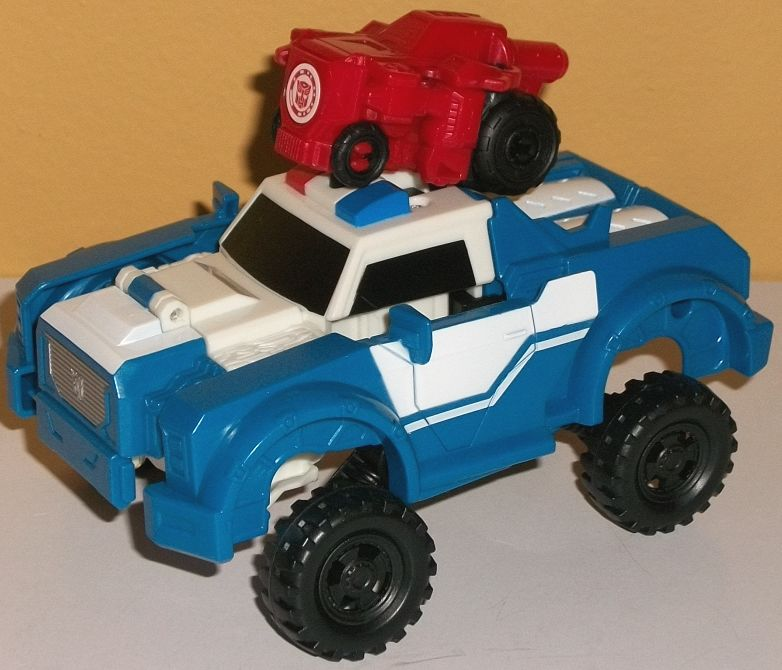

Size : Mini-Con
Difficulty of Transformation : Very Easy
Color Scheme : Dark red, black, and some silver and moderately light blue
Individual Rating: 6.0
Allegiances
: Autobot
 Trickout
Trickout
Size
: Mini-Con
Difficulty of Transformation
: Very
Easy
Color Scheme
: Dark red, black, and
some silver and moderately light blue
Individual Rating:
6.0
Trickout's alternate
mode is an offroad vehicle kinda thing. I say "kinda thing" because some
of these Activator Mini-Con's alt modes can be a bit abstract. There's
some elements here of an offroad vehicle, with a solid, large front bumper,
an angled cockpit w/ windows, and a generally solid main body (though the
robot arms are quite obvious on the sides). However, the size of the rear
wheels, and some exaggerated features like the HUGE exhaust pipe coming
out the back end, make it look a bit like a monster truck. So it's kind
of a mix of both, I guess? Beyond the mold details already discussed, there's
some nice tread details on the wheels, a grill detail on the bottom of
the (outrageously huge) front bumper, some details on the back end to make
it look more like a gas exhaust pipe, and a few angular lines here and
there to help break things up. Unfortunately, there is absolutely NO paint
apps in this mode whatsoever-- a huge loss given some of the rather intricate
mold detailing in places. The entire body of the toy is a dark red in this
mode, with black used for the wheels and some minor connector bits. It's
not a bad color scheme for a small toy, but MAN some paint was needed here.
As with all RID2015
Mini-Cons, Trickout's transformation is quite simple. Just pull down on
the front bumper and stand Trickout up, and the rest auto-transforms, though
it's not much of a transformation-- the arms angle slightly out, as do
the rear tires, and the exhaust pipe retracts in a bit, but that's about
it. It's pretty obviously the vehicle mode more or less standing up on
its back end. The end result makes Trickout look like a rough-'n-tumbler,
which you'd expect from a Mini-Con with his alt mode. The arms are a little
on the thick side for a Mini-Con (though not cartoonishly so), he's got
a wide chest and stock frame, and his round head has a rather perturbed
expression on his face. In fact, he looks like a lot like a Mini-Con version
of G1 Ironhide if you look just at the head, given the design elements.
Oh, and Trickout has those huge rear tires for legs in this mode, kind
of like
Fixit
. It helps make him a bit more
unique, and adds to his stockiness as well. The exhaust pipe coming down
the backside helps stabilize him, so no need to worry about him just rolling
all over the place. Unfortunately once again when it comes to paint, Trickout
is really lacking-- his face is painted silver and his eyes blue, but that's
it. He really needed some color on a few of all those red parts, though
beyond that it's still a fairly unique, fun robot mode. As with most Mini-Cons,
Trickout has no articulation in robot mode.
 Strongarm
Strongarm

Difficulty of Transformation
: Easy
Color Scheme
: Moderately dark blue,
black, white, pearlescent white, and some dark red, silver, and orangish
"cheesy" yellow
Individual Rating
: 7.3
Strongarm's police SUV
alt mode is replicated pretty faithfully for her Activator version, at
least when it comes to the proportions and details. The center portion
with her windows may be a tad undersized, but not by much; otherwise everything's
sized appropriately in this mode, from her wide front grill to her large
tires to the curved sections coming off the back end. All of the mold details
are here, from the blocky, angular front grill, to the rear view mirrors
and angular side doors, to the treads on the tires, and the divots on the
back end that become her lower legs in robot mode. (In fact, this is really
her only real robot extra in this mode; the feet can be seen on the backside
of the roof, where the rear window should be instead. They're not painted,
though, and they tend to blend in well enough with the surrounding parts
where they're not particularly obvious.) She also has those triangular
taillights on the back end, though due to her transformation, there are
two rectangular gaps on the bottom of the tail end. As is unfortunately
the case with basically every RID2015 Strongarm toy, Hasbro just can't/won't
use enough paint to get her color palette accurate in this mode-- she either
has too much blue or too much white, and in this case, it's too much blue.
She still, of course, has her main colors of white, blue, and black, but
there should be far more white on the sides of the vehicle, with blue only
coming up from the doors and then being more apparent on the back end.
Additionally, there should be a blue stripe down the center of her white
hood, not a white stripe down the center of a blue hood! Ugh. It's really
frustrating to see all these Strongarm toys and none of them accurately
represent her color layout (at least that were sold in the USA). Additionally,
many of her details are not painted, like much of her grill and headlights,
as well as her taillights and the full extent of her stylized stripes on
the side. She does have at least the center portion of her grill painted
silver, though, and her windows are painted black while her sirens are
painted red and blue. She does have white plastic used around the middle
section, while most of the rest of white in this mode is paint; however,
the white paint doesn't quite match up with the plastic. The white paint
is more of a straight, "pure" white, while the plastic is more of a pearlescent
white.
Pressing in on the black
button on the top of the roof or inserting Trickout or another Activator
Mini-Con in between her sirens will activate Strongarm's Activator gimmick,
which has her tires pop out on some molded-in "suspension springs", while
the sides of the front two-thirds of her vehicle mode also pop out a bit
as well. I'm not so fond of the sides popping out uneccessarily-- why,
it just makes her look more fragmented for no reason-- but giving her essentially
suspended "monster truck" tires is a cool idea. You have to push back in
the tires and the sides to reset her to her "normal" configuration again,
though to transform Strongarm to robot mode you have to use the Activator
gimmick to get her arms to slide out and then annoyingly push back in the
tires into her shoulders again.
Strongarm's transformation
to robot mode is pretty simple-- beyond what I just mentioned about the
arms, you flip the front of the hood onto the back and then rotate the
back sections of the vehicle around to become her feet (unfortunately probably
having to reset her leg-wheels again in the process, as they are liable
to pop back out again during rotation). The end result is fairly accurate
to Strongarm's robot mode, though a bit simplified obviously, and no "door
wings". Granted, I'm not weeping because of the loss of some kibble, but
it does give her a slightly different look. The front grill/hood section
on her upper back does just hang back there, but it doesn't get in the
way of movement and only becomes obvious from a more side-on view, so it's
a minor complaint. The front side sections of her grill should also be
facing forward on her shoulders and they aren't-- add this to the fact
that there's large pins on her elbows that LOOK like she should be able
to move there but can't, and her arms are a bit disappointing. (The lower
arms are also a bit too short and stubby.) The legs are pretty solid overall,
with all the necessary mold details there as well as on her main body.
She's got those faux "crushed up vehicle" sections on her chest, along
with a "belt" molded onto her waist, and a pretty show-accurate headsculpt.
As far as paint goes, she has an accurate black waist, blue paint apps
on her chest, and white on her lower legs, though as with her vehicle mode,
too much of her is blue-- her arms in particular. Her headsculpt has some
silver on the face and some blue on the forehead and eyes, as well as a
bit of orangish "cheesy" yellow on her headcrest, though the blue on the
sides of her head are missing. She's still more accurate color-wise than
in her vehicle mode, though, and the color breakup is better with more
of a white/black feel towards the center portion of the body. For articulation,
she can move at the neck, shoulders, side-to-side at the hips, and backwards
at the knees. That's it-- a bit of a shame given this is the largest Strongarm
toy in the line. Elbows and forward knee movement would have been especially
appreciated.
Strongarm's Activator
gimmick is pretty cool, giving her a "monster truck" look to her vehicle
mode, her proportions are pretty good overall, and her kibble is minimal.
As such, for someone who wants a simpler, gimmicked version of the character,
she's a decent pick. However, what with her lack of articulation, weak
arms in robot mode, somewhat annoying wheels that can spring out during
the transformation when you don't want them to, and an inaccurate color
layout in vehicle mode, it all definitely keeps her from being the best
RID2015 Strongarm toy there is; as is, beyond the neat gimmick she's merely
so-so. (Trickout is a cool little extra, but not worth the price of the
full package just for him.)
Reviews by Beastbot